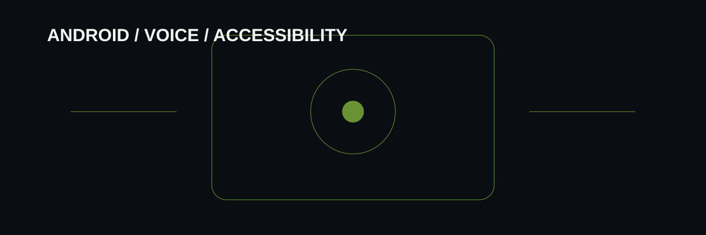

Start with a user action
Define what a person should be able to do, what information is needed, and what counts as a useful response. This keeps a prototype focused on a testable interaction rather than a feature list.
The prototype approach turns broad software ideas into small user actions that can be built, inspected and improved without pretending every experiment is a production product.

JavaScript · HTML/CSS · API experiments · Android concepts · interaction design
Define what a person should be able to do, what information is needed, and what counts as a useful response. This keeps a prototype focused on a testable interaction rather than a feature list.
IDEA → BUILD → TEST → ITERATE. Make the smallest useful slice, try normal and failure paths, then adjust based on the actual behaviour rather than the original assumption.
Nova explores contextual portfolio assistance. EyeNav / Doc represents Android accessibility and voice-first assistant experiments. ME N U explores a private AI-assisted Google Sheets companion with tasks, memory, coins and voice-oriented commands.
Prototype scope should be explicit: where data is stored, which external services are called, what happens when a service fails and which actions require user confirmation. A private experiment is not automatically production-ready.
The portfolio records concrete software experiments and the decisions behind them, making the work easier to inspect and discuss.
This page does not claim a deployed commercial AI service, measured user adoption or a production-grade security audit. Those would require separate implementation and verification.
The links below lead to the related live build, repository or supporting portfolio pages. Project scope is described separately from measured outcomes; no unverified metrics are implied.
Prince Digital Systems is an independent, Prince-led studio. A first conversation can clarify the problem, current tools, constraints, what success should mean and how it will be verified before work is scoped.